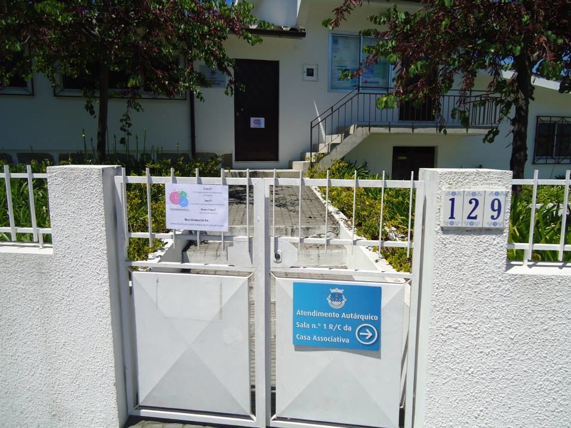

Localização
O Collaboratorium fica em Vermoim, Vila Nova de Famalicão. Mais especificamente na Rua da Autarquia 129, 4770-768 Vermoim.
O espaço principal é no Salão Nobre gentilmente cedido pela Junta de Freguesia de Vermoim. Para trabalhos manuais temos acesso também às traseiras da Casa Associativa, mesmo ao lado.
